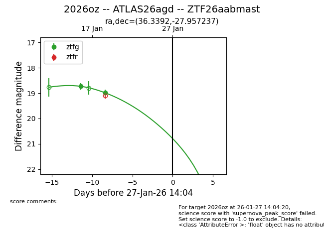
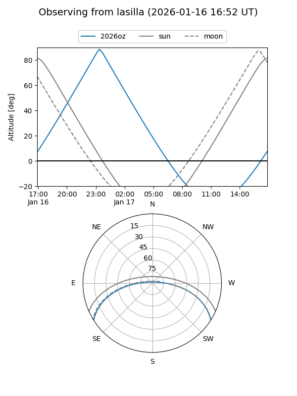
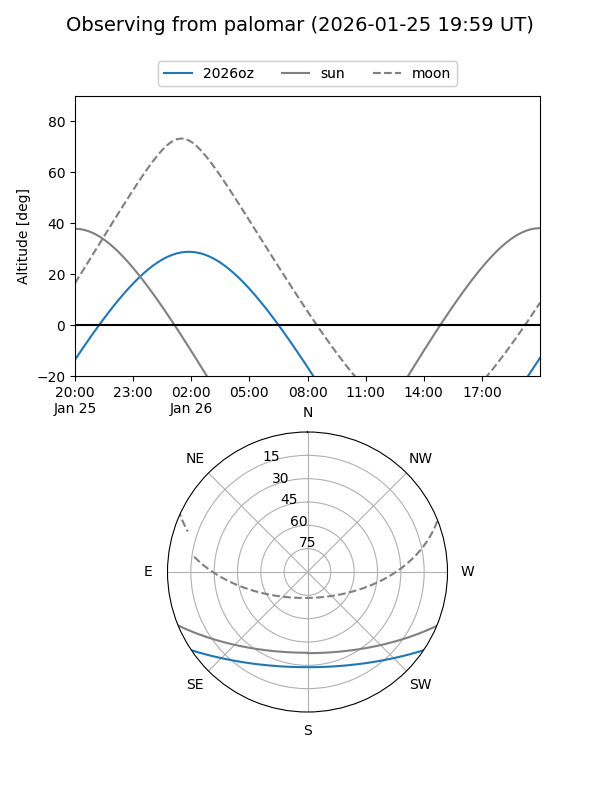
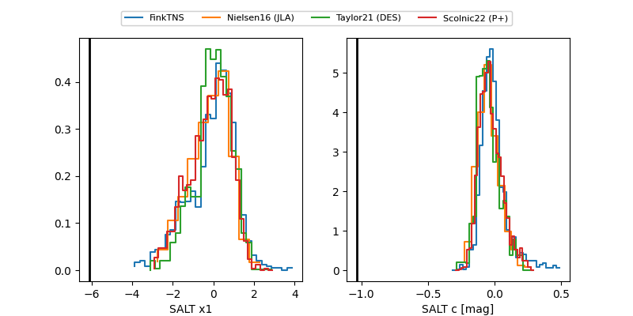

2026oz
Target 2026oz at 2026-01-22 22:15
Aliases and brokers:
FINK: link
Lasair: link
ALeRCE: link
TNS: link
YSE: link
alt names
ZTF26aabmast (ztf,fink_ztf)
2026oz (tns,yse)
ATLAS26agd (atlas)
Coordinates:
equatorial (ra, dec) = 36.3392,-27.95724
equatorial (HMS+DMS) = 02:25:21.40,-27:57:26.05
galactic (l, b) = (220.6694,-69.19670)
Flags:
Photometry:
last ztfg=18.98
2 ztfg detections
Lightcurve

Visibility


Additional plots
